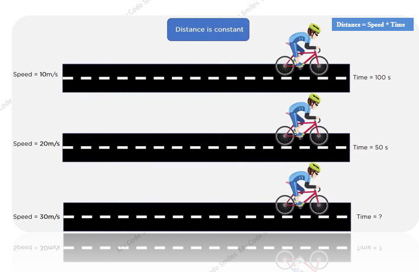
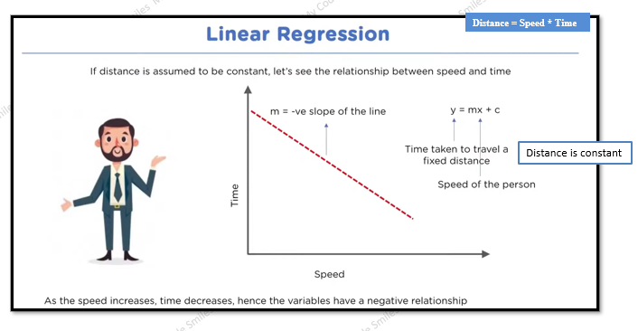
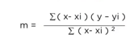
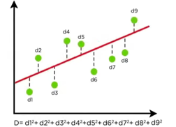

The version space algorithm is a method for finding the most accurate hypothesis from a set of possible
hypotheses in machine learning.
The algorithm is used to solve binary classification problems and is based on the concept of the version
space, which is a subset of the hypothesis space that contains all hypotheses that are consistent with the
training data.
The version space algorithm starts with the most generic hypothesis and the most
specific hypothesis and
iteratively updates the version space based on the training data. In each iteration, the algorithm
eliminates hypotheses from the version space that are inconsistent with the training data and updates the
remaining hypotheses to be more consistent with the data. The process continues until the version space
contains only one hypothesis, which is considered to be the most accurate hypothesis that explains the data.
A hypothesis is a concept or idea that you test through research and experiments.
The version space algorithm has several important properties that make it useful for finding the most
accurate hypothesis:
1. It is a complete method, meaning that it will find the most accurate
hypothesis if one exists.
2.It is consistent, meaning that it will only consider hypotheses that are
consistent with the training
data.
3.It is guaranteed to converge to the most accurate hypothesis in a finite
number of iterations.
Overall, the version space algorithm is a useful method for finding the most accurate hypothesis in
binary
classification problems and is often used as a starting point for developing more advanced machine
learning
algorithms.
However, it has some limitations,
1. Such as the requirement for a well-defined hypothesis space and the potential for a large number of
iterations to converge to the final hypothesis.
2. the algorithm can be computationally expensive for large datasets or complex hypothesis spaces.
Version space is the set of all hypotheses that are consistent with the observed training data. It represents the range of possible solutions to the learning problem given the available data. The version space can be used to make predictions about new, unseen data by selecting the hypothesis that is most likely to be correct based on the observed training data.
VS H,D = {h ϵ H | Consistent (h1D)}
Where H is the complete hypothesis set
h is the subset of H
D is the training data
List and then eliminate :
Step1: List all the hypothesis in H and consider that as the Version space
Step2: Keep on removing inconsistent hypothesis from the version space
(for each and every training examples < X1, C(X)> remove
hypothesis where h(X) ≠ C(X).
Step3: Output the list of all the hypothesis into VS after checking with all the training data/
Examples.
List and then eliminate :
h1(X1) = C (X1) and h1(X2) = C (X2) and h1(X3) = C (X3)
h2(X1) ≠ C (X1) and h2(X2) = C (X2) and h2(X3) = C (X3)
h3(X1) = C (X1) and h3(X2) ≠ C (X2) and h3(X3) = C (X3)
h4(X1) = C (X1) and h4(X2) = C (X2) and h4(X3) ≠ C (X3)
h5(X1) = C (X1) and h5(X2) = C (X2) and h5(X3) = C (X3)
h6(X1) = C (X1) and h6(X2) ≠ C (X2) and h6(X3) = C (X3)
Linear regression is depends on Linear Model
Y = mX + C
C is constant / Co-efficient
m is the slope / y-Intercept
Y is the dependent variable
X is independent variable
Similar graph will come in case we go for : Distance Vs Time where speed is constant
 Let's see the mathematical implementation of Linear regression!
suppose we have a dataset that looks like:
| x | y |
|---|---|
| 1 | 3 |
| 2 | 2 |
| 3 | 2 |
| 4 | 4 |
| 5 | 3 |
Now, lets find regression equation to find the best fit line!
y=mx+c
To find this equation for our data , we need to find our slope(m) and
coefficient(c)
Mean = sum of all number / number count = (1+2+3+4+5)/5 = 3
Mean = sum of all number / number count = (3+2+2+4+3)/5 = 2.8
y=mx+c
| x | y | x-xi | y-yi | (x-xi)^2 | (x-xi)(y-yi) |
|---|---|---|---|---|---|
| 1 | 3 | -2 | 0.2 | 4 | -0.4 |
| 2 | 2 | -1 | -0.8 | 1 | 0.8 |
| 3 | 2 | 0 | -0.8 | 0 | 0 |
| 4 | 4 | 1 | 1.2 | 1 | 1.2 |
| 5 | 3 | 2 | 0.2 | 4 | 0.4 |
Now, let's predict the value of y using x={1,2,3,4,5} and plot the points!
y=(0.2*x)+2.2
| yp=(0.2*1)+2.2=2.4 |
| yp=(0.2*2)+2.2=2.6 |
| yp=(0.2*4)+2.2=2.8 |
| yp=(0.2*4)+2.2=3.0 |
| yp=(0.2*5)+2.2=3.2 |
yp=Predicted values of y
plot the predicted values along with the actual values to see the difference
| x | y | yp |
|---|---|---|
| 1 | 3 | 2.4 |
| 2 | 2 | 2.6 |
| 3 | 2 | 2.8 |
| 4 | 4 | 3 |
| 5 | 3 | 3.2 |
so our goal is to reduce this error!
Minimizing the Distance: There are lots of ways to minimize the distance between the line and the data points like sum of squared errors , sum of Absolute errors , Root Mean square error etc.
We keep moving this line through the data points to make sure the best fit line has the least square distance between the data points and the regression line